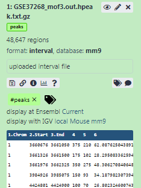
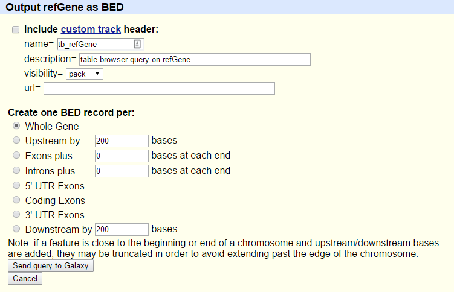
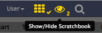

From peaks to genes
 Anne Pajon
Anne Pajon Clemens Blank
Clemens Blank
 Bérénice Batut
Bérénice Batut Björn Grüning
Björn Grüning Nicola Soranzo
Nicola Soranzo Dilmurat Yusuf
Dilmurat Yusuf Sarah Peter
Sarah Peter Helena Rasche
Helena RascheOverviewQuestions:Objectives:
How to use Galaxy?
How to get from peak regions to a list of gene names?
Familiarize yourself with the basics of Galaxy
Learn how to obtain data from external sources
Learn how to run tools
Learn how histories work
Learn how to create a workflow
Learn how to share your work
Time estimation: 3 hoursLevel: Introductory IntroductorySupporting Materials:Last modification: Feb 2, 2023
 Questions:
Questions:
Introduction
We stumbled upon a paper (Li et al. 2012) called “The histone acetyltransferase MOF is a key regulator of the embryonic stem cell core transcriptional network”. The paper contains the analysis of possible target genes of an interesting protein called Mof. The targets were obtained by ChIP-seq in mice and the raw data is available through GEO. However, the list of genes is neither in the supplement of the paper, nor part of the GEO submission. The closest thing we could find is a file in GEO containing a list of the regions where the signal is significantly enriched (so called peaks):
| 1 | 3660676 | 3661050 | 375 | 210 | 62.0876250438913 | -2.00329386666667 |
| 1 | 3661326 | 3661500 | 175 | 102 | 28.2950833625942 | -0.695557142857143 |
| 1 | 3661976 | 3662325 | 350 | 275 | 48.3062708406486 | -1.29391285714286 |
| 1 | 3984926 | 3985075 | 150 | 93 | 34.1879823073944 | -0.816992 |
| 1 | 4424801 | 4424900 | 100 | 70 | 26.8023246007435 | -0.66282 |
Table 1 Subsample of the available file
The goal of this exercise is to turn this list of genomic regions into a list of possible target genes.
Comment: Results may varyYour results may be slightly different from the ones presented in this tutorial due to differing versions of tools, reference data, external databases, or because of stochastic processes in the algorithms.
AgendaIn this tutorial, we will deal with:
Pretreatments
Hands-on: Open Galaxy
- Browse to a Galaxy instance: the one recommended by your instructor or one in the list Galaxy instance on the head of this page
Log in or register (top panel)

The Galaxy interface consist of three main parts. The available tools are listed on the left, your analysis history is recorded on the right, and the central panel will show the tools and datasets.

Let’s start with a fresh history.
Hands-on: Create history
Make sure you have an empty analysis history.
Click the new-history icon at the top of the history panel.
If the new-history is missing:
- Click on the galaxy-gear icon (History options) on the top of the history panel
- Select the option Create New from the menu
Rename your history to make it easy to recognize
Click on the title of the history (by default the title is
Unnamed history)
- Type
Galaxy Introductionas the name- Press Enter

Data upload
Hands-on: Data upload
- Download the list of peak regions (the file
GSE37268_mof3.out.hpeak.txt.gz) from GEO to your computerClick on the upload button in the upper left of the interface
- Press Choose local files and search for your file on your computer
- Select
intervalas Type- Press Start
- Press Close
Wait for the upload to finish. Galaxy will automatically unpack the file.
After this you will see your first history item in Galaxy’s right pane. It will go through the gray (preparing/queued) and yellow (running) states to become green (success):
Directly uploading files is not the only way to get data into Galaxy
- Copy the link location
Open the Galaxy Upload Manager (galaxy-upload on the top-right of the tool panel)
- Select Paste/Fetch Data
Paste the link into the text field
Change Type (set all): from “Auto-detect” to
intervalPress Start
- Close the window
There are more options for advanced users.


Comment: Interval file formatInterval format is a Galaxy format for representing genomic intervals. It is tab-separated, but has the added requirement that three of the columns must be:
- chromosome ID
- start position (0-based)
- end position (end-exclusive)
An optional strand column can also be specified, and an initial header row can be used to label the columns, which do not have to be in any special order. Unlike BED format (see below) arbitrary additional columns can also be present.
You can find more information about formats that can be used in Galaxy at the Galaxy Data Formats page.
Hands-on: Inspect and edit attributes of a file
Click on the file in the history panel
Some meta-information (e.g. format, reference database) about the file and the header of the file are then displayed, along with the number of lines in the file (48,647):
Click on the galaxy-eye (eye) icon (View data) in your dataset in the history
The content of the file is displayed in the central panel
Click on the galaxy-pencil (pencil) icon (Edit attributes) in your dataset in the history
A form to edit dataset attributes is displayed in the central panel
Search for
mm9in Database/Build attribute and selectMouse July 2007 (NCBI37/mm9)(the paper tells us the peaks are frommm9)- Click on Save on the top
Add a tag called
#peaksto the dataset to make it easier to track in the history
- Click on the dataset
- Click on galaxy-tags Add Tags
Add a tag starting with
#Tags starting with
#will be automatically propagated to the outputs of tools using this dataset.- Check that the tag is appearing below the dataset name
The dataset should now look like below in the history


In order to find the related genes to these peak regions, we also need a list of genes in mice, which we can obtain from UCSC.
Hands-on: Data upload from UCSC
Search for
UCSC Mainin the tool search bar (top left)
Click on
UCSC MaintoolYou will be taken to the UCSC table browser, which looks something like this:
- Set the following options:
- “clade”:
Mammal- “genome”:
Mouse- “assembly”:
July 2007 (NCBI37/mm9)- “group”:
Genes and Gene Predictions- “track”:
RefSeq Genes- “table”:
refGene- “region”:
genome- “output format”:
BED - browser extensible data- “Send output to”:
Galaxy(only)Click on the get output button
You will see the next screen:

- Make sure that “Create one BED record per” is set to
Whole Gene- Click on the Send Query to Galaxy button
- Wait for the upload to finish
Rename our dataset to something more recognizable like
Genes
- Click on the galaxy-pencil pencil icon for the dataset to edit its attributes
- In the central panel, change the Name field to
Genes- Click the Save button
- Add a tag called
#genesto the dataset to make it easier to track in the history


Comment: BED file formatThe BED - Browser Extensible Data format provides a flexible way to encode gene regions. BED lines have three required fields:
- chromosome ID
- start position (0-based)
- end position (end-exclusive)
There can be up to and nine additional optional fields, but the number of fields per line must be consistent throughout any single set of data.
You can find more information about it at UCSC including a description of the optional fields.
Now we have collected all the data we need to start our analysis.
Part 1: Naive approach
We will first use a “naive” approach to try to identify the genes that the peak regions are associated with. We will identify genes that overlap at least 1bp with the peak regions.
File preparation
Let’s have a look at our files to see what we actually have here.
Hands-on: View file content
Click on the galaxy-eye (eye) icon (View data) of the peak file to view the content of it
It should look like this:
View the content of the regions of the genes from UCSC


QuestionWhile the file from UCSC has labels for the columns, the peak file does not. Can you guess what the columns stand for?
This peak file is not in any standard format and just by looking at it, we cannot find out what the numbers in the different columns mean. In the paper the authors mention that they used the peak caller HPeak.
By looking at the HPeak manual we can find out that the columns contain the following information:
- chromosome name by number
- start coordinate
- end coordinate
- length
- location within the peak that has the highest hypothetical DNA fragment coverage (summit)
- not relevant
- not relevant
In order to compare the two files, we have to make sure that the chromosome names follow the same format.
As we can see, the peak file lacks chr before any chromosome number. But what happens with chromosome 20 and 21? Will it be X and Y instead? Let’s check:
Hands-on: View end of file
- Search for Select last tool tool and run Select last lines from a dataset (tail) with the following settings:
- “Text file”: our peak file
GSE37268_mof3.out.hpeak.txt.gz- “Operation”:
Keep last lines- “Number of lines”: Choose a value, e.g.
100- Click Run Tool
- Wait for the job to finish
Inspect the file through the galaxy-eye (eye) icon (View data)
Question
- How are the chromosomes named?
- How are the chromosomes X and Y named?
- The chromosomes are just given by their number. In the gene file from UCSC, they started with
chr- The chromosomes X and Y are named 20 and 21
In order to convert the chromosome names we have therefore two things to do:
- add
chr - change 20 and 21 to X and Y
Hands-on: Adjust chromosome names
- Replace Text Tool: toolshed.g2.bx.psu.edu/repos/bgruening/text_processing/tp_replace_in_column/1.1.3 in a specific column with the following settings:
- “File to process”: our peak file
GSE37268_mof3.out.hpeak.txt.gz- “in column”:
1“Find pattern”:
[0-9]+This will look for numerical digits
“Replace with”:
chr&
&is a placeholder for the find result of the pattern searchRename your output file
chr prefix added.- Replace Text Tool: toolshed.g2.bx.psu.edu/repos/bgruening/text_processing/tp_replace_in_column/1.1.3 : Let’s rerun the tool with two more replacements
- “File to process”: the output from the last run,
chr prefix added- “in column”:
1- param-repeat Replacement
- “Find pattern”:
chr20- “Replace with”:
chrX- param-repeat Insert Replacement
- “Find pattern”:
chr21- “Replace with”:
chrY
- Expand the dataset information
- Press the galaxy-refresh icon (Run this job again)
Inspect the latest file through the galaxy-eye (eye) icon. Have we been successful?
We have quite a few files now and need to take care to select the correct ones at each step.
QuestionHow many regions are in our output file? You can click the name of the output to expand it and see the number.
It should be equal to the number of regions in your first file,
GSE37268_mof3.out.hpeak.txt.gz: 48,647 If yours says 100 regions, then you have run it on theTailfile and need to re-run the steps.- Rename the file to something more recognizable, e.g.
Peak regions
Analysis
Our goal is to compare the 2 region files (the genes file and the peak file from the publication) to know which peaks are related to which genes. If you only want to know which peaks are located inside genes (within the gene body) you can skip the next step. Otherwise, it might be reasonable to include the promoter region of the genes into the comparison, e.g. because you want to include transcriptions factors in ChIP-seq experiments. There is no strict definition for promoter region but 2kb upstream of the TSS (start of region) is commonly used. We’ll use the Get Flanks tool to get regions 2kb bases upstream of the start of the gene to 10kb bases downstream of the start (12kb in length). To do this we tell the Get Flanks tool we want regions upstream of the start, with an offset of 10kb, that are 12kb in length, as shown in the diagram below.

Hands-on: Add promoter region to gene records
- Get Flanks Tool: toolshed.g2.bx.psu.edu/repos/devteam/get_flanks/get_flanks1/1.0.0 returns flanking region/s for every gene, with the following settings:
- “Select data”:
Genesfile from UCSC- “Region”:
Around Start- “Location of the flanking region/s”:
Upstream- “Offset”:
10000- “Length of the flanking region(s)”:
12000This tool returns flanking regions for every gene
Compare the rows of the resulting BED file with the input to find out how the start and end positions changed
Click Enable/Disable Scratchbook on the top panel
- Click on the galaxy-eye (eye) icon of the files to inspect
Click on Show/Hide Scratchbook

- Rename your dataset to reflect your findings (
Promoter regions)

The output is regions that start from 2kb upstream of the TSS and include 10kb downstream. For input regions on the positive strand e.g. chr1 134212701 134230065 this gives chr1 134210701 134222701. For regions on the negative strand e.g. chr1 8349819 9289958 this gives chr1 9279958 9291958.
You might have noticed that the UCSC file is in BED format and has a database associated to it. That’s what we want for our peak file as well. The Intersect tool we will use can automatically convert interval files to BED format but we’ll convert our interval file explicitly here to show how this can be achieved with Galaxy.
Hands-on: Change format and database
- Click on the galaxy-pencil (pencil) icon in the history entry of our peak region file
- Switch to the Convert tab
- Under “Target datatype”:
bed (using 'interval-to-bed')- Press Create Dataset
- Check that the “Database/Build” is
mm9(the database build for mice used in the paper)- Again rename the file to something more recognizable, e.g.
Peak regions BED
It’s time to find the overlapping intervals (finally!). To do that, we want to extract the genes which overlap/intersect with our peaks.
Hands-on: Find Overlaps
- Intersect Tool: toolshed.g2.bx.psu.edu/repos/devteam/intersect/gops_intersect_1/1.0.0 the intervals of two datasets, with the following settings:
- “Return”:
Overlapping Intervals- “of”: the UCSC file with promoter regions (
Promoter regions)- “that intersect”: our peak region file from Replace (
Peak regions BED)- “for at least”:
1CommentThe order of the inputs is important! We want to end up with a list of genes, so the corresponding dataset with the gene information needs to be the first input (
Promoter regions).

We now have the list of genes (column 4) overlapping with the peak regions, similar to shown above.
To get a better overview of the genes we obtained, we want to look at their distribution across the different chromosomes. We will group the table by chromosome and count the number of genes with peaks on each chromosome
Hands-on: Count genes on different chromosomes
- Group Tool: Grouping1 data by a column and perform aggregate operation on other columns, with the following settings:
- “Select data” to the result of the intersection
- “Group by column”:
Column 1- Press Insert Operation and choose:
- “Type”:
Count- “On column”:
Column 1- “Round result to nearest integer?”:
NoQuestionWhich chromosome contained the highest number of target genes?
The result varies with different settings, for example, the annotation may change due to updates at UCSC. If you followed step by step, with the same annotation, it should be chromosome 11 with 1992 genes. Note that for reproducibility, you should keep all input data used within the analysis. Rerunning the analysis with the same set of parameters, stored Galaxy, can lead to a different result if the inputs changed e.g. the annotation from UCSC.
Visualization
We have some nice aggregated data, so why not draw a barchart of it?
Before we do that we should polish our grouped data a bit more though.
You may have noticed that the mouse chromosomes are not listed in their correct order in that dataset (the Group tool tried to sort them, but did so alphabetically).
We can fix this by running a dedicated tool for sorting on our data.
Hands-on: Fix sort order of gene counts table
- Sort Tool: toolshed.g2.bx.psu.edu/repos/bgruening/text_processing/tp_sort_header_tool/1.1.1 data in ascending or descending order, with the following settings:
- “Sort Query”: result of running the Group tool
- in param-repeat “Column selections”
- “on column”:
Column 1- “in”:
Ascending order- “Flavor”:
Natural/Version sort (-V)Sometimes there are multiple tools with very similar names. If the parameters in the tutorial don’t match with what you see in Galaxy, please try the following:
Use Tutorial Mode curriculum in Galaxy, and click on the blue tool button in the tutorial to automatically open the correct tool and version (not available for all tutorials yet)
Tools are frequently updated to new versions. Your Galaxy may have multiple versions of the same tool available. By default, you will be shown the latest version of the tool. This may NOT be the same tool used in the tutorial you are accessing. Furthermore, if you use a newer tool in one step, and try using an older tool in the next step… this may fail! To ensure you use the same tool versions of a given tutorial, use the Tutorial mode feature.
- Open your Galaxy server
- Click on the curriculum icon on the top menu, this will open the GTN inside Galaxy.
- Navigate to your tutorial
- Tool names in tutorials will be blue buttons that open the correct tool for you
- Note: this does not work for all tutorials (yet)
- You can click anywhere in the grey-ed out area outside of the tutorial box to return back to the Galaxy analytical interface
Warning: Not all browsers work!
- We’ve had some issues with Tutorial mode on Safari for Mac users.
- Try a different browser if you aren’t seeing the button.
Check that the entire tool name matches what you see in the tutorial. Please check that:
Full tool name:
Sort data in ascending or descending orderTool version:
1.1.1(written after the tool name)

Great, we are ready to plot things!
Hands-on: Draw barchart
- Click on galaxy-barchart (visualize) icon on the output from the Group tool
- Select
Bar diagram (NVD3)- Click on the « in the upper right corner
- Choose a title at Provide a title, e.g.
Gene counts per chromosome- Switch to the galaxy-chart-select-data Select data tab and play around with the settings
When you are happy, click the galaxy-save Save visualization in the top right of the main panel
This will store it to your saved visualisations. Later you can view, download, or share it with others from User -> Visualizations in the top menu of Galaxy.
Extracting workflow
When you look carefully at your history, you can see that it contains all the steps of our analysis, from the beginning to the end. By building this history we have actually built a complete record of our analysis with Galaxy preserving all parameter settings applied at every step. Wouldn’t it be nice to just convert this history into a workflow that we’ll be able to execute again and again?
Galaxy makes this very simple with the Extract workflow option. This means that any time you want to build a workflow, you can just perform it manually once, and then convert it to a workflow, so that next time it will be a lot less work to do the same analysis. It also allows you to easily share or publish your analysis.
Hands-on: Extract workflow
Clean up your history: remove any failed (red) jobs from your history by clicking on the galaxy-delete button.
This will make the creation of the workflow easier.
Click on galaxy-gear (History options) at the top of your history panel and select Extract workflow.
The central panel will show the content of the history in reverse order (oldest on top), and you will be able to choose which steps to include in the workflow.
Replace the Workflow name to something more descriptive, for example:
From peaks to genesIf there are any steps that shouldn’t be included in the workflow, you can uncheck them in the first column of boxes.
Since we did some steps which where specific to our custom peak file, we might want to exclude:
- Select last tool
- all Replace Text tool steps
- Convert Genomic Intervals to BED
- Get flanks tool
Click on the Create Workflow button near the top.
You will get a message that the workflow was created. But where did it go?
Click on Workflow in the top menu of Galaxy
Here you have a list of all your workflows
Select the newly generated workflow and click on Edit
You should see something similar to this:
Comment: The workflow editorWe can examine the workflow in Galaxy’s workflow editor. Here you can view/change the parameter settings of each step, add and remove tools, and connect an output from one tool to the input of another, all in an easy and graphical manner. You can also use this editor to build workflows from scratch.
Although we have our two inputs in the workflow they are missing their connection to the first tool (Intersect tool), because we didn’t carry over some of the intermediate steps.
- Connect each input dataset to the Intersect tool tool by dragging the arrow pointing outwards on the right of its box (which denotes an output) to an arrow on the left of the Intersect box pointing inwards (which denotes an input)
- Rename the input datasets to
Reference regionsandPeak regions- Click on the galaxy-gear (gear) icon at the top right
- Press Auto Re-layout to clean up our view
- Click on the galaxy-save Save icon (top-right) to save your changes
When a workflow is executed, the user is usually primarily interested in the final product and not in all intermediate steps. By default all the outputs of a workflow will be shown, but we can explicitly tell Galaxy which output to show and which to hide for a given workflow. This behaviour is controlled by the little asterisk next to every output dataset:
If you click on this asterisk for any of the output datasets, then only files with an asterisk will be shown, and all outputs without an asterisk will be hidden (Note that clicking all outputs has the same effect as clicking none of the outputs, in both cases all the datasets will be shown).


Now it’s time to reuse our workflow for a more sophisticated approach.
Part 2: More sophisticated approach
In part 1 we used an overlap definition of 1 bp (default setting) to identify genes associated with the peak regions. However, the peaks could be broad, so instead, in order to get a more meaningful definition, we could identify the genes that overlap where most of the reads are concentrated, the peak summit. We will use the information on the position of the peak summit contained in the original peak file and check for overlap of the summits with genes.
Preparation
We again need our peak file, but we’d like to work in a clean history. Instead of uploading it twice, we can copy it to a new history.
Hands-on: Copy history items
Create a new history and give it a new name like
Galaxy Introduction Part 2Click the new-history icon at the top of the history panel.
If the new-history is missing:
- Click on the galaxy-gear icon (History options) on the top of the history panel
- Select the option Create New from the menu
Click on the View all histories (galaxy-columns icon) at the top right of your history
You should see both of your histories side-by-side now
- Drag and drop the edited peak file (
Peak regions, after the replace steps), which contains the summit information, to your new history.- Click on the Home icon galaxy-home (or Analyze Data on older Galaxy versions) in the top menu bar to go back to your analysis window
Create peak summit file
We need to generate a new BED file from the original peak file that contains the positions of the peak summits. The start of the summit is the start of the peak (column 2) plus the location within the peak that has the highest hypothetical DNA fragment coverage (column 5, rounded down to the next smallest integer because some peak summits fall in between to bases). As the end of the peak region, we will simply define start + 1.
Hands-on: Create peak summit file
- Compute on rows Tool: toolshed.g2.bx.psu.edu/repos/devteam/column_maker/Add_a_column1/2.0 with the following parameters:
- “Input file”: our peak file
Peak regions(the interval format file)- *“Input has a header line with column names?”:
No- In “Expressions”:
- param-repeat “Expressions”
- “Add expression”:
c2 + int(c5)- “Mode of the operation”: Append
- param-repeat “Expressions”
- “Add expression”:
c8 + 1- “Mode of the operation”: Append
This will create an 8th and a 9th column in our table, which we will use in our next step:
- Rename the output
Peak summit regions
Now we cut out just the chromosome plus the start and end of the summit:
Hands-on: Cut out columns
- Cut Tool: Cut1 columns from a table with the following settings:
- “Cut columns”:
c1,c8,c9- “Delimited by Tab”:
Tab- “From”:
Peak summit regionsThe output from Cut will be in
tabularformat.Change the format to
interval(use the galaxy-pencil) since that’s what the tool Intersect expects.
- Click on the galaxy-pencil pencil icon for the dataset to edit its attributes
- In the central panel, click on the galaxy-gear Convert tab on the top
- In the lower part galaxy-chart-select-data Datatypes, select
interval
- tip: you can start typing the datatype into the field to filter the dropdown menu
- Click the Save button
The output should look like below:

Get gene names
The RefSeq genes we downloaded from UCSC did only contain the RefSeq identifiers, but not the gene names. To get a list of gene names in the end, we use another BED file from the Data Libraries.
CommentThere are several ways to get the gene names in, if you need to do it yourself. One way is to retrieve a mapping through Biomart and then join the two files (Join two Datasets side by side on a specified field tool). Another is to get the full RefSeq table from UCSC and manually convert it to BED format.
Hands-on: Data upload
Import Tool: upload1
mm9.RefSeq_genes_from_UCSC.bedfrom Zenodo or from the data library:https://zenodo.org/record/1025586/files/mm9.RefSeq_genes_from_UCSC.bed
- Copy the link location
Open the Galaxy Upload Manager (galaxy-upload on the top-right of the tool panel)
- Select Paste/Fetch Data
Paste the link into the text field
Change Genome to
mm9Press Start
- Close the window
As an alternative to uploading the data from a URL or your computer, the files may also have been made available from a shared data library:
- Go into Shared data (top panel) then Data libraries
Navigate to
Click on “Training data” and then “Introduction - From peaks to genes” or the correct folder as indicated by your instructor
- Select the desired files
- Click on the To History button near the top and select as Datasets from the dropdown menu
- In the pop-up window, select the history you want to import the files to (or create a new one)
- Click on Import
As default, Galaxy takes the link as name, so rename them.
Inspect the file content to check if it contains gene names. It should look similar to below:
- Rename it
mm9.RefSeq_genes- Apply the tag
#genes

Repeat workflow
It’s time to reuse the workflow we created earlier.
Hands-on: Run a workflow
- Open the workflow menu (top menu bar)
- Find the workflow you made in the previous section, and select the option Run
- Choose as inputs our
mm9.RefSeq_genes(#genes) BED file and the result of the Cut tool (#peaks)Click Run workflow
The outputs should appear in the history but it might take some time until they are finished.
We used our workflow to rerun our analysis with the peak summits. The Group tool again produced a list containing the number of genes found in each chromosome. But wouldn’t it be more interesting to know the number of peaks in each unique gene? Let’s rerun the workflow with different settings!
Hands-on: Run a workflow with changed settings
- Open the workflow menu (top menu bar)
- Find the workflow you made in the previous section, and select the option Run
- Choose as inputs our
mm9.RefSeq_genes(#genes) BED file and the result of the Cut tool (#peaks)- Click on the title of the tool Group tool to expand the options.
- Change the following settings by clicking on the galaxy-pencil (pencil) icon on the left:
- “Group by column”:
7- In “Operation”:
- “On column”:
7- Click Run workflow
Congratulations! You should have a file with all the unique gene names and a count on how many peaks they contained.
QuestionThe list of unique genes is not sorted. Try to sort it on your own!
You can use the tool “Sort data in ascending or descending order” on column 2 and “fast numeric sort”.
Share your work
One of the most important features of Galaxy comes at the end of an analysis. When you have published striking findings, it is important that other researchers are able to reproduce your in-silico experiment. Galaxy enables users to easily share their workflows and histories with others.
To share a history, click on the galaxy-gear (gear) symbol in the history pane and select Share or Publish. On this page you can do 3 things:
-
Make accessible via Link
This generates a link that you can give out to others. Anybody with this link will be able to view your history.
-
Publish History
This will not only create a link, but will also publish your history. This means your history will be listed under
Shared Data → Published Historiesin the top menu. -
Share with Individual Users
This will share the history only with specific users on the Galaxy instance.

- Share one of your histories with your neighbour
- See if you can do the same with your workflow!
Find the history and/or workflow shared by your neighbour
Histories shared with specific users can be accessed by those users in their history menu (galaxy-gear (gear) icon) under
Histories shared with me.
Conclusion
trophy You have just performed your first analysis in Galaxy. You also created a workflow from your analysis so you can easily repeat the exact same analysis on other datasets. Additionally you shared your results and methods with others.
Key points
Galaxy provides an easy-to-use graphical user interface for often complex commandline tools
Galaxy keeps a full record of your analysis in a history
Workflows enable you to repeat your analysis on different data
Galaxy can connect to external sources for data import and visualization purposes
Galaxy provides ways to share your results and methods with others
Frequently Asked Questions
Have questions about this tutorial? Check out the tutorial FAQ page or the FAQ page for the Introduction to Galaxy Analyses topic to see if your question is listed there. If not, please ask your question on the GTN Gitter Channel or the Galaxy Help ForumReferences
- Li, X., L. Li, R. Pandey, J. S. Byun, K. Gardner et al., 2012 The Histone Acetyltransferase MOF Is a Key Regulator of the Embryonic Stem Cell Core Transcriptional Network. Cell Stem Cell 11: 163–178. 10.1016/j.stem.2012.04.023
Feedback
Did you use this material as an instructor? Feel free to give us feedback on how it went.
Did you use this material as a learner or student? Click the form below to leave feedback.

Citing this Tutorial
- Anne Pajon, Clemens Blank, Bérénice Batut, Björn Grüning, Nicola Soranzo, Dilmurat Yusuf, Sarah Peter, Helena Rasche, From peaks to genes (Galaxy Training Materials). https://training.galaxyproject.org/training-material/topics/introduction/tutorials/galaxy-intro-peaks2genes/tutorial.html Online; accessed TODAY
- Batut et al., 2018 Community-Driven Data Analysis Training for Biology Cell Systems 10.1016/j.cels.2018.05.012
Congratulations on successfully completing this tutorial!@misc{introduction-galaxy-intro-peaks2genes, author = "Anne Pajon and Clemens Blank and Bérénice Batut and Björn Grüning and Nicola Soranzo and Dilmurat Yusuf and Sarah Peter and Helena Rasche", title = "From peaks to genes (Galaxy Training Materials)", year = "", month = "", day = "" url = "\url{https://training.galaxyproject.org/training-material/topics/introduction/tutorials/galaxy-intro-peaks2genes/tutorial.html}", note = "[Online; accessed TODAY]" } @article{Hiltemann_2023, doi = {10.1371/journal.pcbi.1010752}, url = {https://doi.org/10.1371%2Fjournal.pcbi.1010752}, year = 2023, month = {jan}, publisher = {Public Library of Science ({PLoS})}, volume = {19}, number = {1}, pages = {e1010752}, author = {Saskia Hiltemann and Helena Rasche and Simon Gladman and Hans-Rudolf Hotz and Delphine Larivi{\`{e}}re and Daniel Blankenberg and Pratik D. Jagtap and Thomas Wollmann and Anthony Bretaudeau and Nadia Gou{\'{e}} and Timothy J. Griffin and Coline Royaux and Yvan Le Bras and Subina Mehta and Anna Syme and Frederik Coppens and Bert Droesbeke and Nicola Soranzo and Wendi Bacon and Fotis Psomopoulos and Crist{\'{o}}bal Gallardo-Alba and John Davis and Melanie Christine Föll and Matthias Fahrner and Maria A. Doyle and Beatriz Serrano-Solano and Anne Claire Fouilloux and Peter van Heusden and Wolfgang Maier and Dave Clements and Florian Heyl and Björn Grüning and B{\'{e}}r{\'{e}}nice Batut and}, editor = {Francis Ouellette}, title = {Galaxy Training: A powerful framework for teaching!}, journal = {PLoS Comput Biol} Computational Biology} }